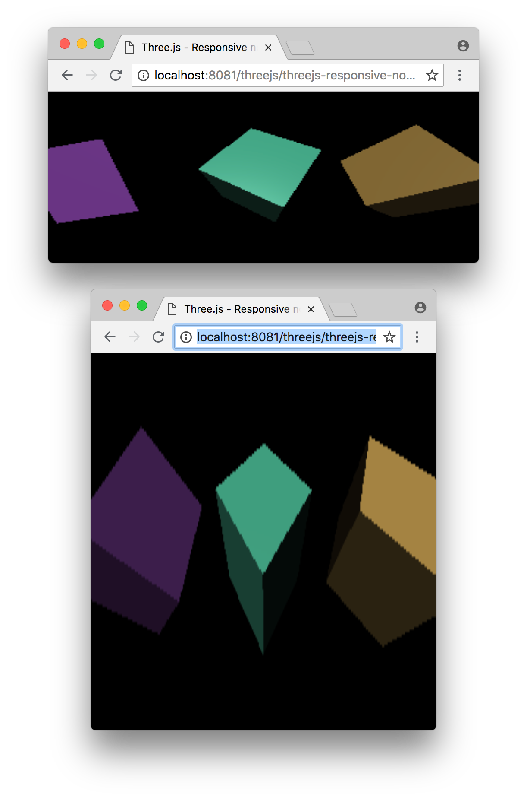
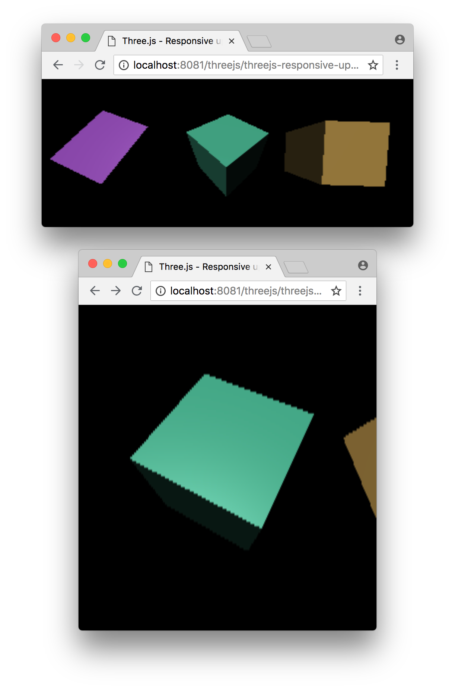

Ceci est le second article dans une série traitant de Three.js. Le premier traitait des principes de base. Si vous ne l'avez pas encore lu, vous deviriez peut-être commencer par là.
Cet article explique comment rendre votre application Three.js adaptable à n'importe quelle situation. Rendre une page web adaptable (responsive) se réfère généralement à faire en sorte que la page s'affiche de manière appropriée sur des écrans de taille différente, des ordinateurs de bureau aux smart-phones, en passant par les tablettes.
Concernant Three.js, il y a d'ailleurs davantage de situations à traiter. Par exemple, un éditeur 3D avec des contrôles à gauche, droite, en haut ou en bas est quelque chose que nous voudrions gérer. Un schéma interactif au milieu d'un document en est un autre exemple.
Le dernier exemple que nous avions utilisé est un canvas sans CSS et sans taille :
<canvas id="c"></canvas>
Ce canvas a, par défaut, une taille de 300x150 pixels. Dans le navigateur, la manière recommandée de fixer la taille de quelque chose est d'utiliser CSS.
Paramétrons le canvas pour occuper complètement la page en ajoutant du CSS :
<style>
html, body {
margin: 0;
height: 100%;
}
#c {
width: 100%;
height: 100%;
display: block;
}
</style>
En HTML, la balise body a une marge fixée à 5 pixels par défaut donc la changer à 0 la retire. Modifier la hauteur de html et body à 100% leur fait occuper toute la fenêtre. Sinon, ils ne sont seulement aussi large que leur contenu.
Ensuite, nous faisons en sorte que l'élément id=c fasse
100% de la taille de son conteneur qui est, dans ce cas, la balise body.
Finalement, nous passons le mode display à block.
Le mode d'affichage par défaut d'un canvas est inline, ce qui implique
que des espaces peuvent être ajoutés à l'affichage.
En passant le canvas à block, ce problème est supprimé.
Voici le résultat :
Le canvas, comme nous le voyons, remplit maintenant la page mais il y a deux problèmes. Tout d'abord, nos cubes sont étirés et ressemblent à des boîtes trop hautes et trop larges. Ouvrez l'exemple dans sa propre fenêtre et redimensionnez la, vous verrez comment les cubes s'en trouvent déformés en hauteur et en largeur.

Le second problème est qu'ils semblent affichés en basse résolution ou à la fois flous et pixellisés. Si vous étirez beaucoup la fenêtre, vous verrez pleinement le problème.
Tout d'abord, nous allons résoudre le problème d'étirement.
Pour cela, nous devons calquer l'aspect de la caméra sur celui
de la taille d'affichage du canvas. Nous pouvons le faire
en utilisant les propriétés clientWidth et clientHeight du canvas.
Nous mettons alors notre boucle de rendu comme cela :
function render(time) {
time *= 0.001;
+ const canvas = renderer.domElement;
+ camera.aspect = canvas.clientWidth / canvas.clientHeight;
+ camera.updateProjectionMatrix();
...
A présent les cubes ne devraient plus être déformés.
Ouvrez l'exemple dans une fenêtre séparée et redimensionnez la. Vous devriez voir que les cubes ne sont plus étirés, que ce soit en hauteur ou en largeur. Ils restent corrects quelque soit l'aspect de la taille de la fenêtre.

Maintenant résolvons le problème de la pixellisation.
Les éléments de type canvas ont deux tailles. La première est celle du canvas affiché dans la page. C'est ce que nous paramétrons avec le CSS. L'autre taille est le nombre de pixels dont est constitué le canvas lui-même. Ceci n'est pas différent d'une image. Par exemple, nous pouvons avoir une image de taille 128x64 et, en utilisant le CSS, nous pouvons l'afficher avec une taille de 400x200.
<img src="some128x64image.jpg" style="width:400px; height:200px">
La taille interne d'un canvas, sa résolution, est souvent appelée sa taille de tampon
de dessin (drawingbuffer). Dans Three.js, nous pouvons ajuster la taille
du canvas en appelant renderer.setSize.
Quelle taille devons nous choisir ? La réponse la plus évidente est "la même taille que
celle du canvas". A nouveau, pour le faire, nous pouvons recourir
aux propriétés clientWidth et clientHeight.
Ecrivons une fonction qui vérifie si le rendu du canvas a la bonne taille et l'ajuste en conséquence.
function resizeRendererToDisplaySize(renderer) {
const canvas = renderer.domElement;
const width = canvas.clientWidth;
const height = canvas.clientHeight;
const needResize = canvas.width !== width || canvas.height !== height;
if (needResize) {
renderer.setSize(width, height, false);
}
return needResize;
}
Remarquez que nous vérifions si le canvas a réellement besoin d'être redimensionné. Le redimensionnement est une partie intéressante de la spécification du canvas et il est mieux de ne pas lui donner à nouveau la même taille s'il est déjà à la dimension que nous voulons.
Une fois que nous savons si le redimensionnement est nécessaire ou non, nous
appelons renderer.setSize et lui passons les nouvelles largeur et hauteur.
Il est important de passer false en troisième.
render.setSize modifie par défaut la taille du canvas dans le CSS, mais ce n'est
pas ce que nous voulons. Nous souhaitons que le navigateur continue à fonctionner
comme pour les autres éléments, en utilisant le CSS pour déterminer la
taille d'affichage d'un élément. Nous ne voulons pas que les canvas utilisés
par Three.js aient un comportement différent des autres éléments.
Remarquez que notre fonction renvoie true si le canvas a été redimensionné. Nous pouvons l'utiliser pour vérifier si d'autre choses doivent être mises à jour. Modifions à présent notre boucle de rendu pour utiliser la nouvelle fonction :
function render(time) {
time *= 0.001;
+ if (resizeRendererToDisplaySize(renderer)) {
+ const canvas = renderer.domElement;
+ camera.aspect = canvas.clientWidth / canvas.clientHeight;
+ camera.updateProjectionMatrix();
+ }
...
Puisque l'aspect ne change que si la taille d'affichage du canvas change,
nous ne modifions l'aspect de la caméra que si resizeRendererToDisplaySize
retourne true.
Le rendu devrait à présent avoir une résolution correspondant à la taille d'affichage du canvas.
Afin de comprendre pourquoi il faut laisser le CSS gérer le redimensionnement,
prenons notre code et mettons le dans un fichier .js séparé. Voici donc quelques autres exemples où nous avons laissé le CSS choisir la taille et remarquez que nous n'avons
eu aucun code à modifier pour qu'ils fonctionnent.
Mettons nos cubes au milieu d'un paragraphe de texte.
et voici notre même code utilisé dans un éditeur où la zone de contrôle à droite peut être redimensionnée.
Le point important à remarquer est que le code n'est pas modifié, seulement le HTML et le CSS.
HD-DPI est l'acronyme pour high-density dot per inch, autrement dit, les écrans à haute densité d'affichage. C'est le cas de la plupart des Macs, des machines sous Windows ainsi que des smartphones.
La façon dont cela fonctionne dans le navigateur est qu'il utilise les pixels CSS pour mettre à jour la taille qui est supposée être la même quelque soit la résolution de l'affichage. Le navigateur effectue le rendu du texte avec davantage de détails mais la même taille physique.
Il y a plusieurs façons de gérer les HD-DPI avec Three.js.
La première façon est de ne rien faire de spécial. Cela est, de manière discutable, le plus commun. Effectuer le rendu de graphismes 3D réclame beaucoup de puissance de calcul au GPU (Graphics Processing Units, les processeurs dédiés de carte graphique). Les GPUs des smartphones ont moins de puissance que ceux des ordinateurs de bureau, du moins en 2018, et pourtant les téléphones mobiles ont des affichages haute résolution. Le haut de gamme actuel pour les smartphones a un ratio HD-DPI de 3x, ce qui signifie que pour chaque pixel d'un affichage non HD-DPI, ces téléphones ont 9 pixels. Il y a donc 9 fois plus de travail pour le rendu.
Calculer pour 9 pixels nécessite des ressources. Donc, si nous laissons le code comme cela, nous calculerons pour 1 pixel et le navigateur le dessinera avec 3 fois sa taille (3 x 3 = 9 pixels).
Pour toute application Three.js lourde, c'est probablement ce que vous voulez sinon vous risquez d'avoir un taux de rafraîchissement faible (framerate).
Ceci étant dit, si vous préférez effectuer le rendu à la résolution de l'appareil, voici quelques façons de le faire en Three.js.
La première est d'indiquer à Three.js le facteur de multiplication de la résolution
en utilisant renderer.setPixelRatio. Nous pouvons demander au navigateur ce
facteur entre les pixels CSS et les pixels du périphérique et les passer à Three.js
renderer.setPixelRatio(window.devicePixelRatio);
Après cela, tout appel à renderer.setSize va automatiquement
utiliser la taille que vous avez demandé, multiplié par le
ratio que vous avez demandé.
Ceci est fortement DÉCONSEILLÉ. Voir ci-dessous.
L'autre façon est de le faire par soi-même quand on redimensionne le canvas.
function resizeRendererToDisplaySize(renderer) {
const canvas = renderer.domElement;
const pixelRatio = window.devicePixelRatio;
const width = canvas.clientWidth * pixelRatio | 0;
const height = canvas.clientHeight * pixelRatio | 0;
const needResize = canvas.width !== width || canvas.height !== height;
if (needResize) {
renderer.setSize(width, height, false);
}
return needResize;
}
Cette seconde façon est objectivement meilleure. Pourquoi ? Parce que cela signifie
que nous avons ce que nous avons demandé. Il y a plusieurs cas où,
quand on utilise Three.js, nous avons besoin de connaître la taille effective
du tampon d'affichage du canvas. Par exemple, quand on réalise un filtre de
post-processing, ou si nous faisons un shader qui accède à gl_FragCoord,
si nous sommes en train de faire une capture d'écran, ou en train de lire les pixels
pour une sélection par GPU, pour dessiner dans un canvas 2D, etc...
Il y a plusieurs cas où, si nous utilisons setPixelRatio alors notre
taille effective est différente de la taille que nous avons demandé et nous
aurons alors à deviner quand utiliser la taille demandée ou la taille utilisée
par Three.js.
En le faisant par soi-même, nous savons toujours que la taille utilisée
est celle que nous avons demandé. Il n'y a aucun cas où cela se fait tout
seul autrement.
Voici un exemple utilisant le code vu plus haut.
Il vous est peut-être difficile de voir la différence, mais si vous avez un affichage HD-DPI et que vous comparez cet exemple aux autres plus haut, vous devriez remarquer que les arêtes sont plus vives.
Cet article a couvert un sujet très basique mais fondamental. Dans l'article suivant, nous allons rapidement passer en revue les primitives de base proposées par Three.js.